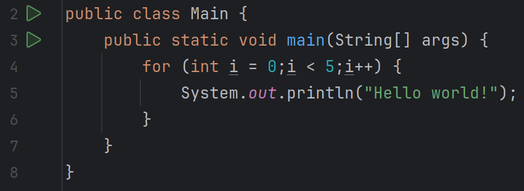

While dövrü verilmiş şərt ödəndiyi müddətdə dövrü davam etdirir.
Dövrü elə yazmaq lazımdır ki, dövr icra olunduğu müddətdə nə zamansa verilmiş şərt pozulsun. Məsələn int tipli dəyişəni hər dövrdə bir vahid artırırıq ki, bir müddətdən sonra həmin ədəd şərtdə verilmiş ədəddən böyük olub şərti pozsun.
Bu dövr müəyyən bir dəyişən üçün verilmiş intervalda icra edir.
Verilmiş dövr 0-dan başlayaraq 5-ə qədər i dəyişəninə qiymətlər verir.
Qeyd! While və for dövrləri arasından seçim etmək verilmiş situasiyadan(case-dən) asılıdır.